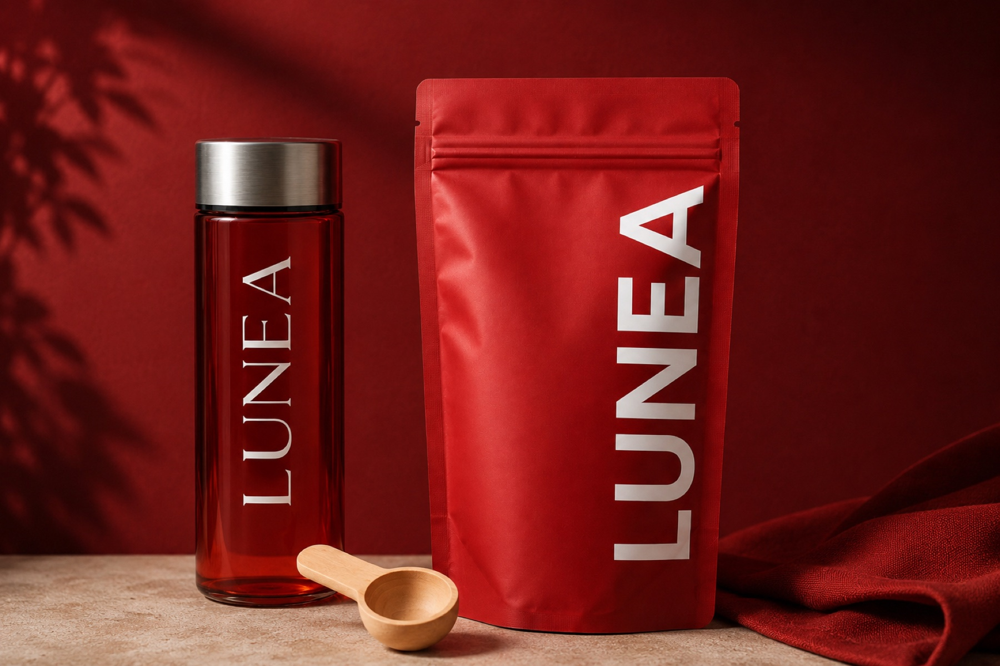
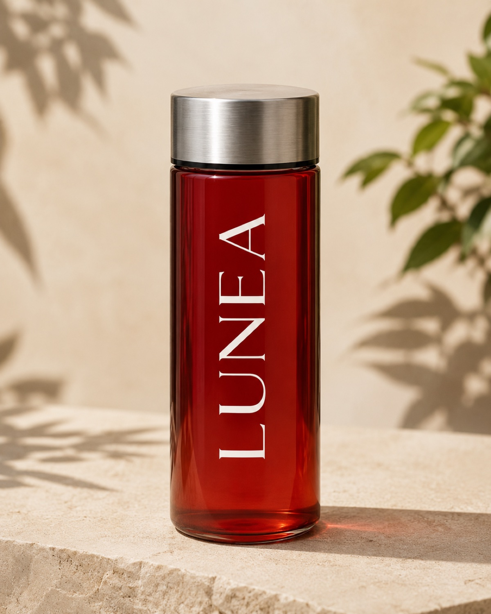
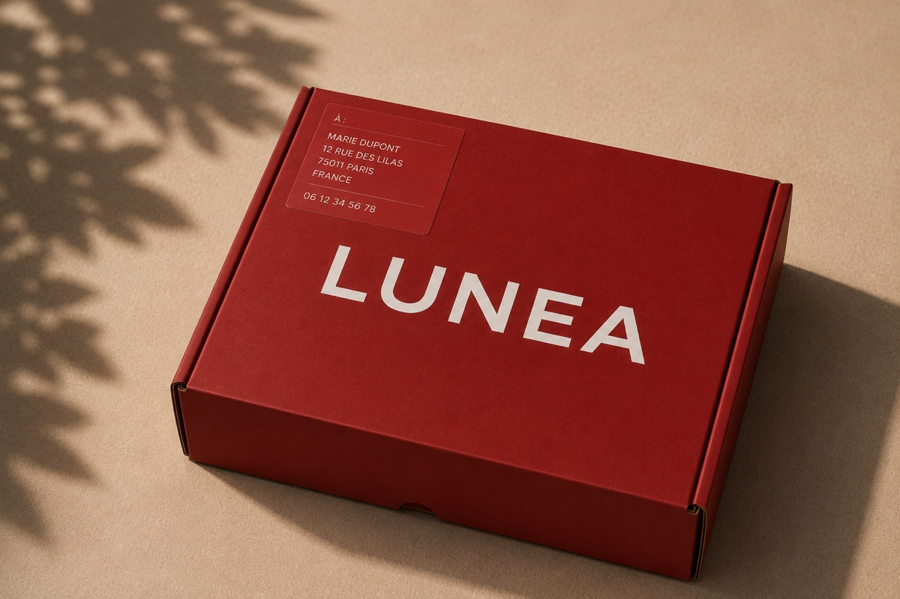

Confort
Aide à traverser les périodes de tiraillements, crampes et sensations de ventre lourd.

Boisson naturelle aux 13 plantes
LUNEA est un rituel quotidien formulé avec 13 plantes sélectionnées pour accompagner votre cycle, apaiser les inconforts et soutenir votre énergie au fil du mois.
Livraison rapide
Offerte dès 60 EUR
Paiement sécurisé
Commande simple par email
Satisfaite ou remboursée
30 jours pour changer d'avis
Un rituel quotidien
LUNEA agit par synergie végétale pour accompagner le confort, l'équilibre émotionnel, la digestion et la vitalité à chaque étape du cycle.
Aide à traverser les périodes de tiraillements, crampes et sensations de ventre lourd.
Soutient la stabilité émotionnelle quand le cycle rend le quotidien plus sensible.
Associe ginseng, cumin, gingembre et plantes adaptogènes pour aider à préserver l'élan.
Installe un rituel apaisant qui invite le corps à retrouver son rythme naturel.
13 plantes. Une synergie unique.
Chaque plante a été choisie pour son rôle complémentaire: confort menstruel, circulation, digestion, humeur, inflammation et vitalité. LUNEA réunit les traditions végétales asiatiques et les données scientifiques modernes dans une formule simple à intégrer au quotidien.
Découvrir les ingrédientsLa formule
La formule complète contient aussi du dextrose monohydraté et une très faible quantité de sucralose pour l'expérience de dégustation.

À mélanger dans de l'eau chaude ou froide pour créer un moment régulier, au lieu d'attendre que l'inconfort prenne toute la place.
Traditionnellement associée au confort féminin et à l'équilibre du flux.
Riche en curcumine, étudiée pour l'inflammation et les bouffées de chaleur.
Plante d'Asie utilisée pour la clarté mentale et l'apaisement.
Adaptogène reconnu pour la vitalité, la fatigue et les transitions hormonales.
Racine thaïlandaise traditionnellement utilisée pour le confort digestif.
Employé pour soutenir la circulation et l'harmonie du cycle.
Étudié pour les ballonnements, les crampes et la fatigue associée au cycle.
Plante asiatique documentée pour ses propriétés anti-inflammatoires.
Racine appelée "ginseng féminin", liée à la circulation et aux usages gynécologiques traditionnels.
Racine de la famille du gingembre, étudiée pour les inconforts menstruels.
Référence du confort digestif et des inconforts liés aux règles.
Étudié chez les femmes ménopausées pour la qualité de vie ressentie.
Bois rouge traditionnellement utilisé pour la circulation et l'inconfort.

Votre rituel
Mélanger une cuillère dans un grand verre d'eau chaude ou froide.
Boire chaque jour, idéalement à heure régulière pour créer une routine.
Anticiper quelques jours avant les règles, ou l'intégrer en cure de fond selon votre rythme.
Tradition et science
Les documents de recherche LUNEA recensent des études cliniques, revues systématiques et usages traditionnels autour des plantes de la formule.
Un essai clinique randomisé l'a comparé à des références utilisées contre les douleurs menstruelles, avec des résultats favorables sur le soulagement ressenti.
Ozgoli et al., 2009Une étude sur la dysménorrhée rapporte une réduction de réponses systémiques comme crampes, fatigue, lombalgies et sueurs froides.
Omidvar et al., 2019Des revues systématiques le documentent sur la fatigue, les bouffées de chaleur et la qualité de vie durant la ménopause.
Lee et al., 2016 et 2022La curcumine est étudiée pour les marqueurs inflammatoires, le stress oxydatif et certains symptômes des premières années de ménopause.
Ataei-Almanghadim et al., 2020
Avis
"Je me sens plus stable avant mes règles. Ce n'est pas magique, mais la routine m'aide à vivre cette période plus calmement."
Sarah, 31 ans"J'aime le côté simple: une boisson par jour, un vrai moment pour moi, et beaucoup moins cette sensation de ventre lourd."
Mathilde, 28 ans"Je l'ai prise en cure de fond. Ce que je remarque surtout, c'est une énergie plus régulière et moins de coups de mou."
Laura, 42 ans
À emporter partout
La gourde rouge LUNEA transforme la prise quotidienne en geste visible, simple et assumé.
FAQ
LUNEA se boit comme un rituel quotidien aux plantes, chaud ou froid, pour accompagner les périodes où le corps demande plus de confort, de régularité et d'attention.
Vous pouvez l'intégrer en rituel quotidien, ou commencer quelques jours avant les règles et poursuivre pendant la période sensible. L'important est la régularité.
Oui. La poudre peut être mélangée dans de l'eau chaude ou froide selon votre préférence.
Aux femmes qui cherchent une routine végétale pour accompagner le cycle, le confort digestif, la fatigue périodique ou les transitions hormonales.
Pour cette version statique, les boutons ouvrent un email de commande vers contact@luneadrink.com. Ils pourront être reliés ensuite à Shopify, Stripe ou une page de paiement.
Guides LUNEA
Comprendre le rôle de chaque plante dans la formule.
02Confort, équilibre, énergie et récupération au quotidien.
03Créer une routine naturelle autour des moments sensibles.
04Lire les guides sur les règles, les plantes, l'énergie et la ménopause.